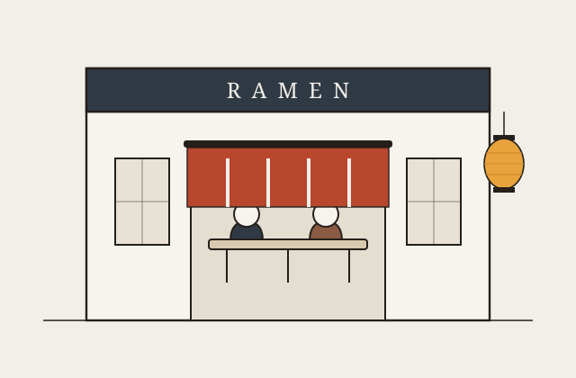
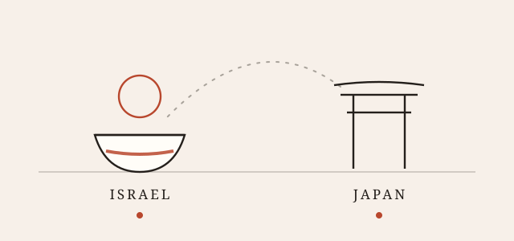

Places · Israel & Japan
Five counters, two countries.
Ramen travels badly and queues well. These are widely known rooms — a small Tel Aviv bar, a Fukuoka institution, a Shinjuku window with a permanent line — rather than a ranking.

Israel
Tel Aviv learned ramen fast
Japanese cooking arrived in Israel as sushi and stayed as izakaya. Ramen came last and is still a small scene: a handful of counters, mostly in Tel Aviv, mostly seating a dozen people, usually with a shorter menu than a Japanese shop and a longer list of small plates beside it.
-
Tel Aviv
Ramen bar · counter seating
Menta
Tonkotsu & shoyuOne of the places that made ramen a thing people in Tel Aviv talk about: a compact, noisy bar built around bowls rather than around sushi, with a broth-first menu, a few izakaya snacks and gyoza on the side. Small room, no ceremony, turnover fast enough that arriving off-peak is the whole trick.
Expect a wait at dinner. Lunch is calmer.
-
Tel Aviv
Izakaya · small plates
Nini Hachi
Izakaya-styleA Japanese-leaning kitchen where the bowl is part of a bigger order — skewers, buns and raw fish first, ramen to finish. Less of a purist ramen-ya than a good night out that happens to serve a proper bowl, which in Israel is often the more reliable version.
Go with a group and order broadly.

Japan
Where the queue is the review
In Japan ramen is cheap, fast and taken extremely seriously. Many shops seat you at a counter, take your order from a ticket machine at the door, and expect you to be gone in twenty minutes. Solo dining is the norm, talking is optional, and the line outside tells you more than any sign.
-
Fukuoka · Hakata
Founded 1960 · branches nationwide
Ichiran
TonkotsuThe famous one, and the reason many people's first tonkotsu was eaten alone. You fill in a paper form — broth richness, garlic, spice level, noodle firmness — and eat in a single-person booth with a bamboo screen in front of you, so nothing gets between you and the bowl. Thin straight noodles, opaque pork broth, and kaedama: a noodle refill ordered while the soup is still hot.
Born in Fukuoka; branches in Tokyo (Shibuya, Shinjuku) and beyond.
-
Tokyo · Shinjuku
Tiny room · long line
Fuunji
TsukemenA narrow shop near Shinjuku station with a queue down the pavement most of the day, known above all for tsukemen: noodles served cold and dry, with a thick, almost gravy-like chicken-and-dried-fish dipping broth alongside. Intense, salty, faintly sweet, and not a subtle introduction to the genre.
Order at the machine before joining the line.
-
Tokyo
Michelin star, 2016
Tsuta
Shoyu sobaThe first ramen shop in the world to be awarded a Michelin star. The bowl that did it is restrained — a clear soy-based broth, house noodles, a slick of truffle oil — and served in a room with barely nine seats, on a system of timed tickets rather than an endless queue.
Check the current location and ticket system before you go; the shop has moved.
Counter etiquette, condensed
Eat immediately. The noodles are timed to the moment the bowl is handed over; photographing it for five minutes ruins it.
Slurping is fine. It cools the noodles on the way in and is not considered rude.
Don't linger. At a busy counter the seat is the scarce thing, not the food.
Finish the broth or don't. Either is accepted — though in a tonkotsu shop it's the best part.
Hours, addresses and even locations change, and popular shops move or close — check current details before travelling to any of these.